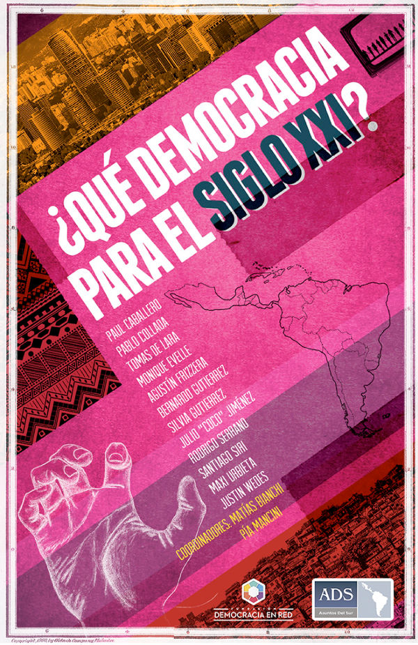

¿Qué democracia para el siglo XXI?
La convergencia entre Asuntos del Sur y Democracia en Red, con otros pares y organizaciones de América Latina, despliega, de forma colectiva, la pregunta más importante que puede y debe hacerse esta generación: ¿qué democracia queremos y podemos construir?
La democracia es un espacio vivo, en constante transformación, por lo tanto, no estamos condenados a las instituciones que heredamos. Éstas son un bien colectivo que podemos y debemos rediseñar para el contexto social y tecnológico que atravesamos en la actualidad.
No es un proceso fácil, ni un proceso que pueda tomarse a la ligera, pero las innovaciones en la tecnología de organización y comunicación hacen necesario debatir qué democracia queremos para el siglo XXI y qué características deberá tener la ciudadanía que la protagonice. Estamos ante el surgimiento de una ciudadanía con nuevas capacidades y, como resultado, podemos discutir cómo es, cómo queremos que sea, en el siglo XXI la democracia.
Esta colección de artículos es fruto de la reflexión de hacedores, de activistas sociales de todas la región que se animan a poner por escrito sus aprendizajes y sus inquietudes. No pretenden proveer respuestas únicas, sino presentar una mirada hacia el futuro.
La convergencia entre Asuntos del Sur y Democracia en Red, con otros pares y organizaciones de América Latina, despliega, de forma colectiva, la pregunta más importante que puede y debe hacerse esta generación: ¿qué queremos y podemos construir como democracia?
Coordinadores
Matías Bianchi y Pía Mancini
ISBN
978-987-45915-0-0

Asuntos del Sur www.asuntosdelsur.org
Democracia en Red www.democraciaenred.org
Con el apoyo de Fundación Avina y Open Society Foundation.